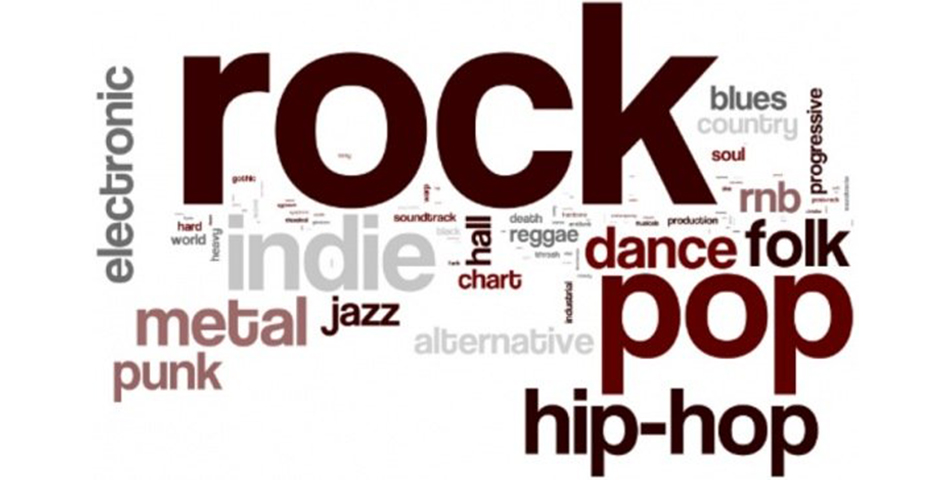

.jpeg)

Es más fácil sentirla y reproducirla que explicarla o definirla. Todos entendemos qué es la música, pero ¿cuántos pueden poner en palabras cuáles son sus características esenciales o aquello que le da sentido?
Puede decirse que la música es el arte que consiste en dotar a los sonidos y los silencios de una cierta organizacion. El resultado de este orden resulta lógico, coherente y agradable al oído.
Los géneros musicales son una clasificación academicista de música según determinados aspectos. Se valora la instrumentación y la función de estas obras.
La música forma parte de nuestras vidas casi desde que nacemos, y para muchos es considerada el alimento del alma.
Existen diferentes tipos de música, y cada persona puede variar en sus gustos, a continuación hablaremos de algunos de los más populares. Existe gran variedad de géneros musicales, pues la música ha evolucionado a lo largo del tiempo y cada cultura ha desarrollado sus propios estilos musicales.

Pero más allá de los gustos musicales, está claro que la sensación de estar escuchando música de nuestro gusto es única e incluso indescriptible. La música nos hace sentir sensaciones increíbles y nos hace sentir diferentes emociones: alegría, éxtasis, felicidad, tristeza, amor...
Aqui en BlueChip Artists buscamos que encuentres un genero especial en el que te sientas identificado, que te guste su ritmo, sus letras... Pero sobre todo sus artistas mas famosos. Da click en el menu para que vayas directo a los generos o los artistas.